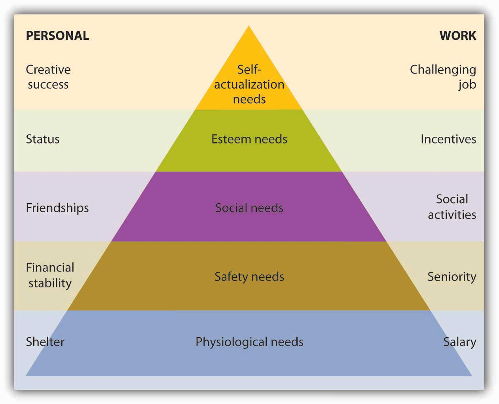
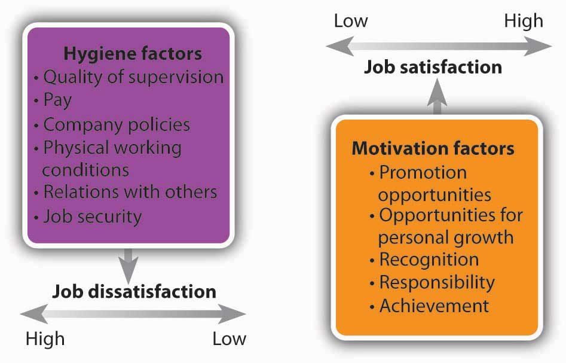
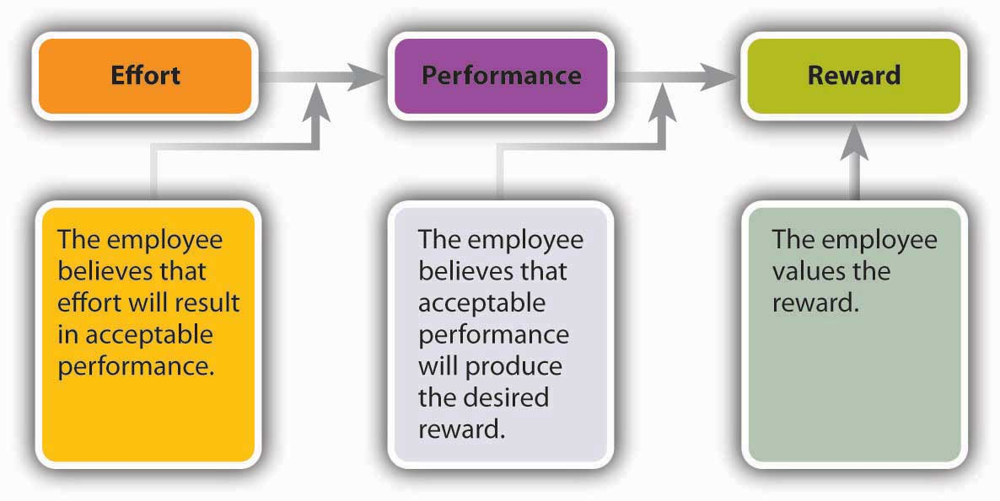

MotivationInternally generated drive to achieve a goal or follow a particular course of action. refers to an internally generated drive to achieve a goal or follow a particular course of action. Highly motivated employees focus their efforts on achieving specific goals; those who are unmotivated don’t. It’s the manager’s job, therefore, to motivate employees—to get them to try to do the best job they can. But what motivates employees to do well? How does a manager encourage employees to show up for work each day and do a good job? Paying them helps, but many other factors influence a person’s desire (or lack of it) to excel in the workplace. What are these factors? Are they the same for everybody? Do they change over time? To address these questions, we’ll examine four of the most influential theories of motivation: hierarchy-of-needs theory, two-factor theory, expectancy theory, and equity theory.
Psychologist Abraham Maslow’s hierarchy-of-needs theoryTheory of motivation that holds that people are motivated by a hierarchical series of unmet needs. proposed that we are motivated by the five unmet needs, arranged in the hierarchical order shown in Figure 7.3 "Maslow’s Hierarchy-of-Needs Theory", which also lists examples of each type of need in both the personal and work spheres of life. Look, for instance, at the list of personal needs in the left-hand column. At the bottom are physiological needs (such life-sustaining needs as food and shelter). Working up the hierarchy we experience safety needs (financial stability, freedom from physical harm), social needs (the need to belong and have friends), esteem needs (the need for self-respect and status), and self-actualization needs (the need to reach one’s full potential or achieve some creative success).
Figure 7.3 Maslow’s Hierarchy-of-Needs Theory
There are two things to remember about Maslow’s model:
Let’s say, for example, that you’ve just returned to college and that for a variety of reasons that aren’t your fault, you’re broke, hungry, and homeless. Because you’ll probably take almost any job that will pay for food and housing (physiological needs), you go to work repossessing cars. Fortunately, your student loan finally comes through, and with enough money to feed yourself, you can look for a job that’s not so risky (a safety need). You find a job as a night janitor in the library, and though you feel secure, you start to feel cut off from your friends, who are active during daylight hours. You want to work among people, not books (a social need). So now you join several of your friends selling pizza in the student center. This job improves your social life, but even though you’re very good at making pizzas, it’s not terribly satisfying. You’d like something that will let you display your intellectual talents (an esteem need). So you study hard and land a job as an intern in the governor’s office. On graduation, you move up through a series of government appointments and eventually run for state senator. As you’re sworn into office, you realize that you’ve reached your full potential (a self-actualization need) and you comment to yourself, “It doesn’t get any better than this.”
What implications does Maslow’s theory have for business managers? There are two key points: (1) Not all employees are driven by the same needs, and (2) the needs that motivate individuals can change over time. Managers should consider which needs different employees are trying to satisfy and should structure rewards and other forms of recognition accordingly. For example, when you got your first job repossessing cars, you were motivated by the need for money to buy food. If you’d been given a choice between a raise or a plaque recognizing your accomplishments, you’d undoubtedly have opted for the money. As a state senator, by contrast, you may prefer public recognition of work well done (say, election to higher office) to a pay raise.
Another psychologist, Frederick Herzberg, set out to determine which work factors (such as wages, job security, or advancement) made people feel good about their jobs and which factors made them feel bad about their jobs. He surveyed workers, analyzed the results, and concluded that to understand employee satisfaction (or dissatisfaction), he had to divide work factors into two categories:
Figure 7.5 "Herzberg’s Two-Factor Theory" illustrates Herzberg’s two-factor theoryTheory that holds that motivation involves both motivation factors (which contribute to job satisfaction) and hygiene factors (which help to prevent job dissatisfaction).. Note that motivation factors (such as promotion opportunities) relate to the nature of the work itself and the way the employee performs it. Hygiene factors (such as physical working conditions) relate to the environment in which it’s performed. (Note, too, the similarity between Herzberg’s motivation factors and Maslow’s esteem and self-actualization needs.)
Figure 7.5 Herzberg’s Two-Factor Theory
We’ll ask the same question about Herzberg’s model as we did about Maslow’s: What does it mean for managers? Suppose you’re a senior manager in an accounting firm, where you supervise a team of accountants, each of whom has been with the firm for five years. How would you use Herzberg’s model to motivate the employees who report to you? Let’s start with hygiene factors. Are salaries reasonable? What about working conditions? Does each accountant have his or her own workspace, or are they crammed into tiny workrooms? Are they being properly supervised or are they left on their own to sink or swim? If hygiene factors like these don’t meet employees’ expectations, they may be dissatisfied with their jobs.
As you can see in Figure 7.5 "Herzberg’s Two-Factor Theory", fixing problems related to hygiene factors may alleviate job dissatisfaction, but it won’t necessarily improve anyone’s job satisfaction. To increase satisfaction (and motivate someone to perform better), you must address motivation factors. Is the work itself challenging and stimulating? Do employees receive recognition for jobs well done? Will the work that an accountant has been assigned help him or her to advance in the firm? According to Herzberg, motivation requires a twofold approach: eliminating dissatisfiers and enhancing satisfiers.
If you were a manager, wouldn’t you like to know how your employees decide to work hard or goof off? Wouldn’t it be nice to know whether a planned rewards program will have the desired effect—namely, motivating them to perform better in their jobs? Wouldn’t it be helpful if you could measure the effect of bonuses on employee productivity? These are the issues considered by psychologist Victor Vroom in his expectancy theoryTheory of motivation that proposes that employees will work hard to earn rewards they value and consider obtainable., which proposes that employees will work hard to earn rewards that they value and that they consider obtainable.
As you can see from Figure 7.6 "Vroom’s Expectancy Theory", Vroom argues that an employee will be motivated to exert a high level of effort to obtain a reward under three conditions:
Figure 7.6 Vroom’s Expectancy Theory
To apply expectancy theory to a real-world situation, let’s analyze an automobile-insurance company with one hundred agents who work from a call center. Assume that the firm pays a base salary of $2,000 a month, plus a $200 commission on each policy sold above ten policies a month. In terms of expectancy theory, under what conditions would an agent be motivated to sell more than ten policies a month?
Now let’s alter the scenario slightly. Say that the company raises prices, thus making it harder to sell the policies. How will agents’ motivation be affected? According to expectancy theory, motivation will suffer. Why? Because agents may be less confident that their efforts will lead to satisfactory performance. What if the company introduces a policy whereby agents get bonuses only if buyers don’t cancel policies within ninety days? How will this policy affect motivation? Now agents may be less confident that they’ll get bonuses even if they do sell more than ten policies. Motivation will decrease because the link between performance and reward has been weakened. Finally, what will happen if bonuses are cut from $200 to $25? Obviously, the reward would be of less value to agents, and, again, motivation will suffer. The message of expectancy theory, then, is fairly clear: managers should offer rewards that employees value, set performance levels that they can reach, and ensure a strong link between performance and reward.
What if you spent thirty hours working on a class report, did everything you were supposed to do, and handed in an excellent assignment (in your opinion). Your roommate, on the other hand, spent about five hours and put everything together at the last minute. You know, moreover, that he ignored half the requirements and never even ran his assignment through a spell-checker. A week later, your teacher returns the reports. You get a C and your roommate gets a B+. In all likelihood, you’ll feel that you’ve been treated unfairly relative to your roommate.
Your reaction makes sense according to the equity theoryTheory of motivation that focuses on our perceptions of how fairly we’re treated relative to others. of motivation, which focuses on our perceptions of how fairly we’re treated relative to others. Applied to the work environment, this theory proposes that employees analyze their contributions or job inputs (hours worked, education, experience, work performance) and their rewards or job outcomes (salary, benefits, recognition). Then they create a contributions/rewards ratio and compare it to those of other people. The basis of comparison can be any one of the following:
When individuals perceive that the ratio of their contributions to rewards is comparable to that of others, they perceive that they’re being treated equitably; when they perceive that the ratio is out of balance, they perceive inequity. Occasionally, people will perceive that they’re being treated better than others. More often, however, they conclude that others are being treated better (and that they themselves are being treated worse). This is what you concluded when you saw your grade. You’ve calculated your ratio of contributions (hours worked, research and writing skills) to rewards (project grade), compared it to your roommate’s ratio, and concluded that the two ratios are out of balance.
What will an employee do if he or she perceives an inequity? The individual might try to bring the ratio into balance, either by decreasing inputs (working fewer hours, refusing to take on additional tasks) or by increasing outputs (asking for a raise). If this strategy fails, an employee might complain to a supervisor, transfer to another job, leave the organization, or rationalize the situation (perhaps deciding that the situation isn’t so bad after all). Equity theory advises managers to focus on treating workers fairly, especially in determining compensation, which is, naturally, a common basis of comparison.
This chapter describes four theories of motivation: hierarchy-of-needs theory, two-factor theory, expectancy theory, and equity theory. Briefly describe each theory. Which one makes the most intuitive sense to you? Why do you find it appealing?